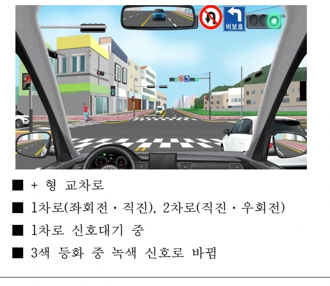

794. Hai yếu tố nào là nguy hiểm nhất khi rẽ trái không bảo hộ trong tình huống sau?

- ①Có thể có xe từ làn đường số 2 đối diện lao nhanh thẳng đến.
- ②Xe phía sau xe chở hàng ở làn đường số 1 đối diện có thể tạm dừng để rẽ trái.
- ③Xe đang đi theo phía sau có thể đột ngột chuyển sang làn đường số 2.
- ④Người đi bộ ở đường bên trái có thể băng qua vạch sang đường dành cho người đi bộ.
- ⑤Xe chở hàng ở làn đường số 1 đối diện có thể rẽ trái không bảo hộ.
Xem đáp án
Đáp án
① Có thể có xe từ làn đường số 2 đối diện lao nhanh thẳng đến.
④ Người đi bộ ở đường bên trái có thể băng qua vạch sang đường dành cho người đi bộ.
Căn cứ
Khi rẽ trái không được bảo vệ, bạn phải chú ý đến các phương tiện đi thẳng khi đèn xanh ở phía đối diện. Tốc độ của những phương tiện đó có thể nhanh hơn dự kiến và bạn có thể không nhìn thấy các phương tiện đang đi thẳng từ làn đường thứ hai vì xe chở khách ở làn đường đầu tiên ở phía bên kia. Ngoài ra, nếu có lối sang đường ở bên trái đường, bạn phải cẩn thận với người đi bộ.
Phần căn cứ là bản dịch máy để tham khảo.